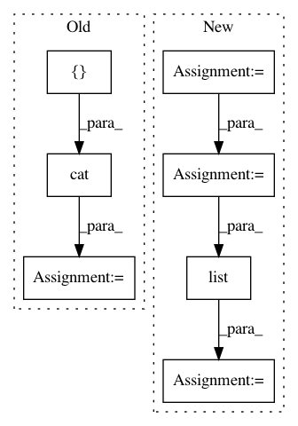

fa6f47e7aee228226421c52e61cce4e1ab4cc099,tests/ml/test_loss.py,,test_permutation_invariant_loss_tf,#,40
Before Change
for shift in range(n_sources):
sources_a = sources[:, :, :, shift:]
sources_b = sources[:, :, :, :shift]
shifted_sources = torch.cat(
[sources_a, sources_b], dim=-1)
_loss_b = LossPIT(shifted_sources, sources).item()
assert _loss_a == _loss_b
def test_combination_invariant_loss_tf():
After Change
_loss_a = LossL1(noisy, sources).item()
for i in range(n_batch):
p = random.choice(list(permutations(range(n_sources))))
permuted_batch = noisy[i, ..., list(p)].unsqueeze(0)
permuted.append(permuted_batch)
permuted = torch.cat(permuted, dim=0)
_loss_b = LossPIT(permuted, sources).item()
In pattern: SUPERPATTERN
Frequency: 3
Non-data size: 7
Instances
Project Name: interactiveaudiolab/nussl
Commit Name: fa6f47e7aee228226421c52e61cce4e1ab4cc099
Time: 2020-03-15
Author: prem@u.northwestern.edu
File Name: tests/ml/test_loss.py
Class Name:
Method Name: test_permutation_invariant_loss_tf
Project Name: ixaxaar/pytorch-dnc
Commit Name: af1a77ca7fbc2bdabec7e859b7046ea3a28b6081
Time: 2017-11-01
Author: root@ixaxaar.in
File Name: dnc/dnc.py
Class Name: DNC
Method Name: forward
Project Name: ixaxaar/pytorch-dnc
Commit Name: 4dde9c49f8cf467b7c11675005cdcd2be1b07e1a
Time: 2017-11-01
Author: root@ixaxaar.in
File Name: dnc/dnc.py
Class Name: DNC
Method Name: forward